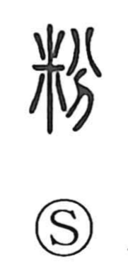

粉

Uncategorized
Kun: kona, ko | On: fun
powder ・ flour
Explanation
A phono-semantic character, with 分 functioning as the phonetic element that gives the on reading fun and also evokes its sense of cutting or dividing. The character as a whole refers to grain or similar substances broken into tiny pieces, which naturally yields the meanings “powder” and “flour.” Classical sources already link it to cosmetics: the Shuowen glosses it as something used to make up the face, that is, white face powder (oshiroi). In antiquity this was rice powder; later, white lead pigments were also used. Cosmetics and masking played a role in ritual settings, and this sense lives on in compounds like funshoku, the adornment of outward appearance.